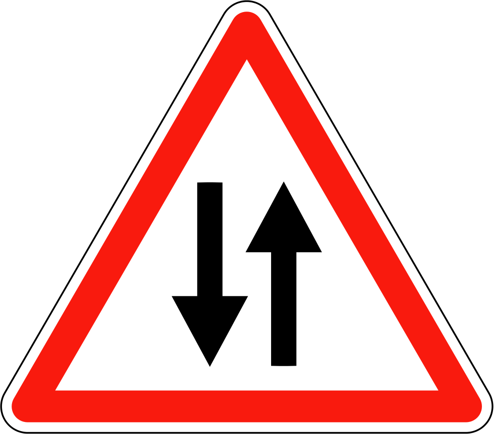
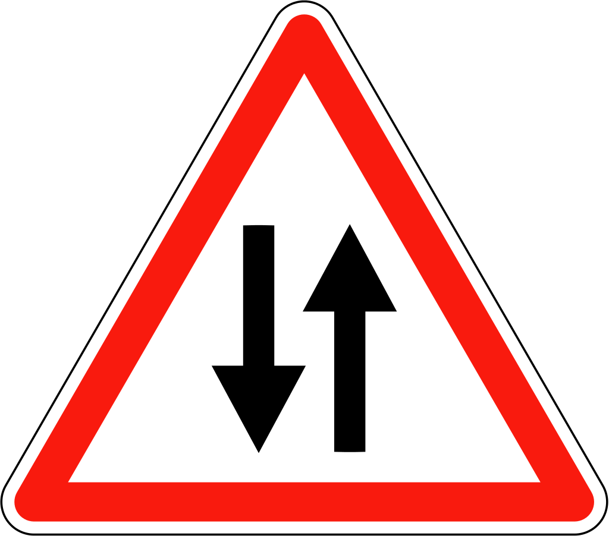

C3 Initiation à Python avec Turtle - Partie 1
Remarque
Cette initiation à Python utilise le module turtle.
Une autre découverte de Python plus "classique" est disponible sous forme de notebooks et pourra être utilisée (à la maison) pour compléter cette approche.
Notebooks
- Notebook 1 :
printpour afficher dans le terminale, notion de variable. Jupyter Notebook - Notebook 2 :
inputpour demander une valeur, type des variables. Jupyter Notebook - Notebook 3 : A la découverte des instructions conditionnelles. Jupyter Notebook
- Notebook 4 : Les boucles
foretwhile. Jupyter Notebook - Notebook 5 : Les fonctions et l'instruction
return. Jupyter Notebook - Notebook 6 : A la découverte des listes (partie 1) Jupyter Notebook
- Notebook 7 : A la découverte des listes (partie 2) Jupyter Notebook
Activités
 Activité 1 : Desssiner avec le module turtle
Activité 1 : Desssiner avec le module turtle
A retenir
Le module turtle du langage Python permet de dessiner dans une fenêtre graphique, pour l'utiliser il faut d'abord l'importer avec import. Ensuite, nous devons créer un crayon virtuel (Turtle du module turtle) et un papier virtuel (Screen du module turtle). Les trois lignes de codes suivantes seront donc la base de tous nos programmes :
import turtle
crayon = turtle.Turtle()
papier = turtle.Screen()
crayon (et papier) sont de notre choix, nous aurions pu par exemple les appeler stylo et feuille.
-
Premier programme
- Recopier puis exécuter les trois lignes de code données en introduction ci-dessus. Que se passe-t-il ? Pourquoi ?
-
Ajouter en fin de programme :
papier.exitonclick()et exécuter de nouveau le programme. Quel est selon vous le rôle de cette nouvelle instruction ?A retenir
Afin d'éviter que la fenêtre ne se ferme à la fin du programme on rajoute à la fin du programme
papier.exitonclick() -
Quelle est la forme du "crayon" ? Dans quelle direction est-il orienté ? Quel est le nom du "papier" ?
A retenir
L'orientation de la tortue est définie par l'angle qu'elle fait avec l'horizontal, à la façon de ce qui se passe sur un rapporteur :
-
Dessiner des lignes
- Le "papier" est muni d'un repère, comme en mathématiques (en grisé sur la figure suivante) : Où se situe le crayon initialement ?
-
Pour dessiner des lignes, on peut simplement déplacer le crayon avec
gotoen donnant les coordonnées du point d'arrivée. Par exemple pour tracer le segment indiqué par un sur la figure suivante on a utilisé l'instruction :Compléter le programme afin de tracer les deux autres segments.crayon.goto(200,200)A retenir !
Pour simplement déplacer le crayon sans tracer de traits, on utilise
penupet pour reposer le crayonpendownpar exemple,déplace le crayon encrayon.penup() crayon.goto(-100,100) crayon.pendown()(-100,100)sans tracer de trait. -
On peut aussi tracer un trait en faisant avancer le crayon d'un nombre de pixels. En effet le crayon est orienté dans une direction (le sens de la flèche) et pour le faire avancer on utilisera
forward(backwardpermet de reculer). L'orientation de la tortue peut être fixée à une direction donnée grâce àsetheadingou modifiée grâce àleft(qui tourne de l'angle donné à gauche) ouright(qui tourne de l'angle donnée à droite). Par exemple pour tracer le segment indiqué par un sur la figure suivante, après avoir positionnée la tortue en(-100,100), on a utilisé :Compléter le programme afin de tracer le carré.crayon.setheading(90) crayon.forward(150)
-
Tracer des cercles
- Pour tracer un cercle, on utilise
circleen indiquant son rayon, attention la tortue n'est pas le centre du cercle. Elle est un point du cercle, le centre se situant à gauche de l'orientation de la tortue comme indiqué sur le schéma suivant : Compléter la figure en traçant le cercle indiqué par un :
- Pour tracer un cercle, on utilise
-
Modifier le crayon et le papier
A retenir
- On peut modifier l'épaisseur du trait grâce à
pensize - On peut modifier la couleur du trait grâce à
pencolor - On peut modifier la couleur du fond grâce à
bgcolor - Pour remplir une surface, on commence sa construction avec
begin_fillet on la termine avecbegin_fill - On peut modifier la couleur de remplissage grâce à
fillcolorLes couleurs sont données sous la forme(r,g,b), en hexadécimal comme en html (par exemple#12A5F2) ou encore avec un nom en anglais (black,red,blue,brown, ...)
Réaliser le dessin ci-dessous :
Aide
- Le crayon a une épaisseur de 5
- Les couleurs utilisées sont
blacketgrey(pour le rectangle) puisgreen,orangered,darkred,lightgreen,orangeetredpour les cercles
- On peut modifier l'épaisseur du trait grâce à
Activité 2 : Premières fonctions
On souhaite dessiner un "bonhomme bâton" tel que celui représenté ci-dessous :
La couleur du crayon est black, son épaisseur 5.
- Ecrire un programme Python permettant de dessiner la tête
- Tracer la ligne représentant le corps
- Tracer chacun des deux bras
-
Remarquons ques les instructions permettant de tracer les "bâtons" du bonhomme sont très similaires. En effet :
- on relève le crayon avec
penup - on se positionne sur une extrémité de la ligne avec
goto - on abaisse le crayon avec
pendown - on se déplace jusqu'à l'autre extrémité avec un nouveau
gotoL'idée est donc de définir un bloc réutilisable avec ces quatre instructions afin de tracer chacune des lignes en précisant leurs extrémités. Ces blocs d'instructions sont ce qu'on appelle des fonctions, ils commencent pardef. Les instructions contenues dans les fonctions peuvent dépendre de certaines valeurs. Dans notre cas, ces paramètres seront :- les coordonnées
x1ety1de l'une des extrémités de la ligne - les coordonnées
x2ety2de l'autre extrémité.
- les coordonnées
Ajouter les instructions suivantes à votre programme :
On dispose maintenant d'une fonction permettant de tracer n'importe quelle ligne en donnant ses extrémités. Utiliser cette fonction pour tracer les jambes et terminer le bonhomme.def ligne(x1,y1,x2,y2): crayon.penup() crayon.goto(x1,y1) crayon.pendown() crayon.goto(x2,y2) - on relève le crayon avec
-
Ecrire une fonction
carrepermettant de tracer un carré en donnant les coordonnées de son coin inférieur gauche et la longueur de son côté.Aide
Cette fonction accepte donc trois paramètres, qu'on pourra nommer
x,y(les coordonnées du coin inférieur gauche) etcla longueur du côté. -
Utiliser la fonction
carreafin de tracer la figure suivante : On précise que :- les côtés des carrés sont 200, 190 et 180
- les couleurs des carrés sont "darkred", "red" et "orange"
- les inclinaisons par rapport à l'horizontale sont 0, 10 et 20
Activité 3 : Boucles
On souhaite dessiner avec Turtle, la frise suivante d'inspiration grecque :
Le motif répété dans cette frise a été isolé en rouge ci-dessous :
- Ecrire une fonction python
motifqui ne prend pas d'argument et trace ce motif à partir de la position courante de la tortue. On utilisera un crayon de taille 15 et les dimensions du motif sont indiqués sur la figure ci-dessous :
- En plaçant correctement la tortue au début et en effectuant plusieurs appels à la fonction
motif, dessiner la frise (pour tracer les deux lignes qui entourent la frise, on pourra utiliser la fonctionlignedéjà vue ci-dessus) -
Pour répondre à la question précédente, vous avez du taper :
De façon répéter le dessin du motif, une bouclemotif() motif() motif() motif()foren python permet notamment de répéter un certain nombre de fois un bloc d'instructions. Par exemple, pour répéter 5 fois le motif on écrit :On dit quefor i in range(5): motif()iest l'indice de boucle, c'est une variable qui prendra successivement les valeurs 0,1,2,3 et 4 à chaque passage dans la boucle.
Utiliser une boucle pour dessiner la frise. -
On souhaite maintenant qu'un motif sur deux soit d'une couleur différente, comme ci-dessous : On utilise ici une instruction conditionnelle qui va changer la couleur du crayon suivant que l'indice de boucle soit pair ou impair :
if i%2 == 0: crayon.color("darkred") else: crayon.color("navy")- Rappeler le rôle de l'opération
% - Intégrer ce bloc d'instructions à la boucle
foret tracer la frise colorée.
- Rappeler le rôle de l'opération
Activité 4 : Plus loin avec les boucles
On souhaite dessiner la grille suivante à l'aide du module turtle de Python :
 On dispose déjà d'un début de programme qui définit les propriétés du papier et du crayon ainsi que la fonction
On dispose déjà d'un début de programme qui définit les propriétés du papier et du crayon ainsi que la fonction ligne permettant de tracer une ligne en donnant les deux extrémités (voir activités précédentes) :
import turtle
# Création du "papier" et du "crayon"
crayon = turtle.Turtle()
papier = turtle.Screen()
# Taille, dimension et couleur pour le papier et le crayon
papier.bgcolor("beige")
papier.setup(width=500,height=500)
crayon.color("navy")
crayon.pensize(5)
def ligne(x1,y1,x2,y2):
crayon.penup()
crayon.goto(x1,y1)
crayon.pendown()
crayon.goto(x2,y2)
- Écrire les instructions permettant de tracer les lignes horizontales.
- Une (bien) meilleure solution
- Vérifier que les instructions suivantes permettent de tracer les lignes verticales :
for abscisse in range(-200,250,50): ligne(abscisse,-200,abscisse,200) - Quelles sont les valeurs prises successives prises par la variable
abscissedans le programme précédant ? - Rappeler le rôle des paramètres de
range
- Vérifier que les instructions suivantes permettent de tracer les lignes verticales :
- Tracer les lignes horizontales en utilisant une boucle
for
Cours
Vous pouvez télécharger une copie au format pdf du diaporama de synthèse de cours présenté en classe :
Attention
Ce diaporama ne vous donne que quelques points de repères lors de vos révisions. Il devrait être complété par la relecture attentive de vos propres notes de cours et par une révision approfondie des exercices.
QCM
1. Quelle instruction permet d'orienter une tortue crayon vers le bas ?
- a)
tortue.forward(270) - b)
tortue.left(270) - c)
tortue.right(270) - d)
tortue.setheading(270)
- a)
tortue.forward(270) - b)
tortue.left(270) - c)
tortue.right(270) - d)
tortue.setheading(270)
2. On suppose que la tortue crayon est située en (0,0) et est orientée vers le bas, quelle suite d'instructions permet de construire la figure suivante ?

- a)
crayon.forward(100)
crayon.left(90)
crayon.forward(50) - b)
crayon.forward(100)
crayon.right(90)
crayon.forward(50) - c)
crayon.forward(100)
crayon.setheading(90)
crayon.forward(50) - d)
crayon.forward(100)
crayon.left(45)
crayon.forward(50)
- a)
crayon.forward(100)
crayon.left(90)
crayon.forward(50) - b)
crayon.forward(100)
crayon.right(90)
crayon.forward(50) - c)
crayon.forward(100)
crayon.setheading(90)
crayon.forward(50) - d)
crayon.forward(100)
crayon.left(45)
crayon.forward(50)
3. Quelles instructions permettent de positionner la tortue crayon en (-100,100), sans rien tracer à l'écran ?
- a)
crayon.penup()
crayon.set(-100,100) - b)
crayon.penup()
crayon.forward(-100,100) - c)
crayon.pendown()
crayon.goto(-100,100) - d)
crayon.penup()
crayon.goto(-100,100)
- a)
crayon.penup()
crayon.set(-100,100) - b)
crayon.penup()
crayon.forward(-100,100) - c)
crayon.pendown()
crayon.goto(-100,100) - d)
crayon.penup()
crayon.goto(-100,100)
4. En python, la définition d'une fonction commencer par le mot clé :
- a)
function - b)
def - c)
import - d)
return
- a)
function - b)
def - c)
import - d)
return
5. Quelle sera le dessin produit par l'instruction mystere(100,45) où mystere est la fonction ci-dessous :
def mystere(l,a):
crayon.penup()
crayon.goto(0,0)
crayon.setheading(a)
crayon.forward(l)
- a) Un trait de longueur 45 d'orientation 100° et partant de l'origine
- b) Un trait de longueur 100 d'orientation 45° et partant de l'origine
- c) Deux traits de longueur 100 se croisant à l'origine à 45°
- d) Cette fonction ne produit aucun dessin !
- a)
Un trait de longueur 45 d'orientation 100° et partant de l'origine - b)
Un trait de longueur 100 d'orientation 45° et partant de l'origine - c)
Deux traits de longueur 100 se croisant à l'origine à 45° - d) Cette fonction ne produit aucun dessin !
6. Quelle instruction permet de créer une boucle qui va répéter 5 fois les instructions indentées qui suivent ?
- a)
for ma_variable in range(5) - b)
for ma_variable in range(5): - c)
for ma_variable in 5: - d)
if ma_variable in 5:
- a)
for ma_variable in range(5) - b)
for ma_variable in range(5): - c)
for ma_variable in 5: - d)
if ma_variable in 5:
7. Quelle instruction permet de tester si la variable essais vaut 10 ?
- a)
if essais=10 - b)
if essais==10 - c)
if essais==10: - d)
if essais in 10:
- a)
if essais=10 - b)
if essais==10 - c)
if essais==10: - d)
if essais in 10:
8. Quel est la valeur de la variable b après exécution de ce programme :
a = 10
if a%2==0:
b=1
else:
b=2
- a)
b=1 - b)
b=2 - c)
b=10 - d) Aucune car ce programme produit une erreur
- a)
b=1 - b)
b=2 - c)
b=10 - d)
Aucune car ce programme produit une erreur
9. De quand date la première version du langage Python ?
- a) 1951
- b) 1971
- c) 1991
- d) 2011
- a)
1951 - b)
1971 - c) 1991
- d)
2011
10. En python, par quel caractère commence une ligne de commentaire ?
- a)
$ - b)
? - c)
# - d)
:
- a)
$ - b)
? - c)
# - d)
:
11. Quel faut-il écrire pour importer la librairie csv dans Python ?
- a)
import csv - b)
with csv - c)
csv import - d)
from csv
- a)
import csv - b)
with csv - c)
csv import - d)
from csv
Exercices
Exercice 1 : Quelques dessins avec turtle
Ecrire un programme Python permettant de dessiner les figures suivante :
Aide
On donne le squelette de programme suivant qui servira de point de départ :
import turtle
papier = turtle.Screen()
crayon = turtle.Turtle()
crayon.pensize(5)
crayon.color("navy")
-
La lettre H
-
Une croix centrée sur l'origine
Attention
- La longueur totale d'une branche de couleur est de 200 pixels
- Les couleurs des branches sont navy et darkred
- La branche de couleur navy fait un angle de 45° avec l'horizontale
-
Des cercles
Exercice 2 : Utilisation d'une fonction
Rappel
On donne ci-dessous le code de la fonction ligne(x1,y1,x2,y2) vue dans l'activité 2, elle permet de tracer la ligne joignant les points d'extrémités (x1,y1) et (x2,y2)
def ligne(x1,y1,x2,y2):
crayon.penup()
crayon.goto(x1,y1)
crayon.pendown()
crayon.goto(x2,y2)
- En utilisant la fonction
ligne, construire la grille de morpion suivante : - Dessiner de nouveau la lettre H de l'exercice 1 en vous aidant de cette fonction.
- Comparer les deux programmes (avec et sans fonction), qu'en pensez-vous ?
Exercice 3 : Ecrire une fonction
Le but de l'exercice est de pouvoir dessiner une croix dans l'une quelconque des cases de la grille de morpion de l'exercice précédent. Comme par exemple dans la case supérieure droite tel qu'illustré ci-dessous.
Les croix ont toujours la même couleur (green) et la même taille (des branches de longueur 40 pixels), seule la position de leur centre varie. On décide donc, d'écrire une fonction croix(x,y) qui trace la croix à partir du point de coordonnées (x,y)
- Recopier et compléter l'écriture de la fonction croix (pour l'instant seule la branche supérieure droite est tracée):
def croix(x,y): crayon.penup() crayon.goto(x,y) crayon.pendown() crayon.setheading(45) crayon.forward(40) ... - Utilisation de la fonction
- Quel appel à la fonction
croixpermet de tracer la croix se situant dans la case supérieure droite ? - Quel sera le résultat de l'instruction
croix(-100,0)?
- Quel appel à la fonction
Exercice 4 : Une fonction cercle
- En vous inspirant de l'exercice 3, écrire une fonction
cercle(x,y)qui permet de tracer un cercle de rayon 35 et de couleur darkred dans l'une quelconque des cases de la grille de morpion. Comme par exemple ci-dessous dans la case inférieure droite. - Reproduire la grille de morpion suivante en utilisant les fonctions
croixetcercle:
Exercice 5 : Quelques figures avec turtle
Construire les figures suivantes (le repère est là pour vous aider et ne doit pas être reproduit):
- L'escalier
- Cercles concentriques (les couleurs alternent entre
blueetlightblue, le crayon a une épaisseur de 10, les cercles ont pour rayon 10,20,30, ...)
- Hachures
Exercice 6 : Lignes
-
En utilisant une boucle
forcontenant une instruction conditionnelle, écrire un programme Python permettant de tracer la figure suivante : La ligne centrale est tracé avec un crayon d'épaisseur 4 et en couleur darkred, toutes les autres lignes sont d'épaisseur 2 et en couleur navy. -
Modifier l'instruction conditionnelle contenue dans le boucle
forde façon à ce que les lignes au dessus de la ligne centrale soient tracées en couleur green.
Exercice 7 : Suite de carrés
Ecrire un programme python permettant de dessiner la figure ci-dessous :
 Votre programme devra contenir :
Votre programme devra contenir :
- la définition d'une fonction
carreet des appels à cette fonction, - une boucle,
- une instruction conditionnelle.
Exercice 8 : Polygone régulier
-
Ecrire une fonction
triangle_equilateral(c)qui trace un triangle équilatéral de côtecà partir de la position courante de la tortue.Aide
- On rappelle que tous les angles d'un triangle équilatéral sont égaux et valent 60°.
- Les deux premières étapes de la construction sont illustrées ci-dessous.
- Comme un angle plat mesure 180°, on a tourné de 120° de façon à former un angle intérieur de 180°-160° = 60°
-
Ecrire une fonction
carre(c)qui trace un carré de côtecà partir de la position courante de la tortue. -
Ecrire une fonction
polygone_regulier(n,c)qui trace un polygone régulier de côtecà partir de la position courante de la tortue.Rappel
- Un polygone régulier est un polygone dont tous les côtés sont de la même longueur et tous les angles sont égaux.
- Les angles d'un polygone régulier à \(n\) côtés mesurent \(\dfrac{360}{n}\)
Exercice 9 : Drapeau
Le module turtle permet aussi de colorier des surfaces, pour cela:
on fixe la couleur de remplissage avec crayon.fillcolor()
avant de commencer le dessin de la surface, on écrit crayon.begin_fill()
à la fin de la construction de la surface, on écrit crayon.end_fill()
Par exemple, pour dessiner un cercle rempli en rouge :
crayon.fillcolor("red")
crayon.begin_fill()
crayon.circle(50)
crayon.end_fill()
- Ecrire et tester une fonction
rectangle_rempli(x,y,largeur,longueur,couleur)qui trace un rectangle rempli avec la couleurcouleur, de dimensionslargeur x longueuret dont le coin inférieur gauche est situé au point de coordonnées(x,y) - En utilisant la fonction ci-dessus, écrire un programme Python permettant de dessiner un drapeau français de dimension
300sur200(chacun des trois rectangles formant le drapeau est de dimensions100x200) - Même question avec le drapeau de la Suède.
Exercice 10 : Panneau de signalisation
Ecrire un programme Python permettant de dessiner le panneau de signalisation de votre choix. Quelques exemples sont proposés ci-dessous.


 

Aide
Consulter la page de documentation du module turtle et plus particulièrement celle concernant la fonction write qui permet d'écrire à l'écran
Humour d'informaticien